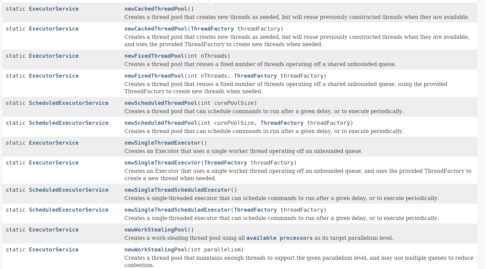
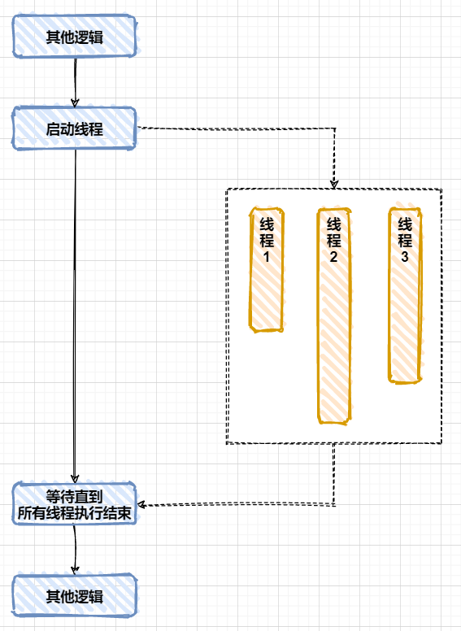
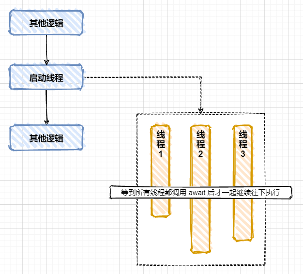

直接创建线程 1 2 3 4 5 6 7 8 9 10 11 12 public void thread1 () new Thread(() -> { try { for (int i = 0 ; i < 10 ; i++) { System.out.println("thread-1: " + i); TimeUnit.SECONDS.sleep(1 ); } } catch (InterruptedException e) { e.printStackTrace(); } }).start(); }
使用 @Async 使用 @Async 异步执行方法，只需要 2 步:
使用 @EnableAsync 开启
然后自己在方法上使用注解 @Async ，方法被调用时就能异步执行了
1 2 3 4 5 6 7 @SpringBootApplication @EnableAsync public class DemoThreadApplication public static void main (String[] args) SpringApplication.run(DemoThreadApplication.class, args); } }
1 2 3 4 5 6 7 8 9 10 11 12 13 14 @Async public void thread2 () try { for (int i = 0 ; i < 10 ; i++) { System.out.println("thread-2: " + i); TimeUnit.SECONDS.sleep(1 ); } } catch (InterruptedException e) { e.printStackTrace(); } }
@ASync 的执行器 以前的版本 @Async 默认使用 SimpleAsyncTaskExecutor 作为执行器，每次提交都直接创建一个新线程， 新版 Spring Boot 中默认使用 ThreadPoolTaskExecutor。
怎么判断使用的是哪一个执行器呢？
@Async 自定义执行器 只创建一个 Executor 对象注入到 Spring 容器中，所有 @Async 注解的方法默认都会使用这个执行器:
1 2 3 4 @Bean public Executor simpleAsyncTaskExecutor () return new SimpleAsyncTaskExecutor(); }
如果创建了多个 Executor 对象，可以实现接口 AsyncConfigurer 指定默认的执行器:
1 2 3 4 5 6 7 8 9 10 11 12 13 14 15 @SpringBootApplication @EnableAsync public class DemoThreadApplication implements AsyncConfigurer @Override public Executor getAsyncExecutor () ThreadPoolTaskExecutor executor = new ThreadPoolTaskExecutor(); executor.initialize(); return executor; } public static void main (String[] args) SpringApplication.run(DemoThreadApplication.class, args); } }
@Async 指定执行器 当创建了多个执行器，给 @Async 传入需要使用的执行器的名字:
1 2 3 4 @Async("simpleAsyncTaskExecutor") public void thread2 () System.out.println(Thread.currentThread()); }
调用类自己的 @Async 的方法 需要使用 @Lazy @Autowired 延迟创建的方式注入类自己的对象:
1 2 3 4 5 6 7 8 9 10 11 12 13 14 15 16 @Service public class ZooService @Lazy @Autowired private ZooService self; public void thread2 () System.out.println(Thread.currentThread()); self.doAsync(); } @Async public void doAsync () System.out.println("doAsync: " + Thread.currentThread()); } }
提示: 直接调用 this.doAsync() 的话 @Async 不生效，涉及到 Spring AOP 的实现原理，调用的是类原来的方法，而不是经过 AOP 生成的方法。
使用线程池 可以使用 Executors 创建线程池，然后提交 Runnable 或者 Callable:
1 2 3 4 5 6 7 8 9 10 11 12 @Service public class ZooService ExecutorService executeService = Executors.newSingleThreadExecutor(); public void thread2 () System.out.println("Outer: " + Thread.currentThread()); executeService.submit(() -> { System.out.println("Inner: " + Thread.currentThread()); }); } }
Executors 提供了多种创建 ExecutorService 的方法，根据不同的用途进行使用:

提示: 阿里的开发规范中建议不要使用 Executors 创建线程池，而是直接使用 ThreadPoolExcecutor 进行创建，原因是 Executors 创建的线程池的最大线程数和任务队列的最大值可能是 Integer.MAX_VALUE，运行时可能导致线程太多或者任务堆积太多导致不可控问题，应该自己根据具体业务需求设置 maximumPoolSize 和 workQueue。
线程间传递 ThreadLocal 变量 线程间需要传递的 ThreadLocal 可以使用 java.lang.InheritableThreadLocal ，手动创建线程、线程池、@Async 等场景下都生效:
This class extends ThreadLocal to provide inheritance of values from parent thread to child thread: when a child thread is created, the child receives initial values for all inheritable thread-local variables for which the parent has values. Normally the child’s values will be identical to the parent’s; however, the child’s value can be made an arbitrary function of the parent’s by overriding the childValue method in this class.
1 2 3 4 5 6 7 8 9 10 11 12 13 14 15 16 17 @Service public class ZooService public static final ThreadLocal<String> user = new InheritableThreadLocal<>(); ExecutorService executeService = Executors.newSingleThreadExecutor(); public void thread2 () System.out.println("Outer: " + Thread.currentThread()); ZooService.user.set("Alice" ); executeService.submit(() -> { System.out.println("Inner: " + Thread.currentThread()); System.out.println(ZooService.user.get()); }); } }
等待多个线程结束后继续执行 
常规有三种实现方式，CountDownLatch、CompletionService 和 CompletableFuture。
CountDownLatch 的使用步骤:
创建一个 CountDownLatch: c = new CountDownLatch(5)
线程 A 中创建并启动 5 个线程
线程 A 中调用 c.await()，等待
当 5 个线程都调用了 c.countDown() 后，线程 A 继续往下执行
1 2 3 4 5 6 7 8 9 10 11 12 13 14 15 16 17 18 19 20 21 22 23 24 25 26 27 28 29 30 31 32 33 @Service public class ZooService private final Random random = new Random(); public void thread2 () throws InterruptedException System.out.println("thread2 start" ); CountDownLatch latch = new CountDownLatch(5 ); for (int i = 1 ; i <= 5 ; i++) { new Thread(() -> { String name = Thread.currentThread().getName(); System.out.println("Start: " + name); try { int time = random.nextInt(10 ); System.out.printf("Thread %s waits %d seconds\n" , name, time); TimeUnit.SECONDS.sleep(time); } catch (InterruptedException e) { e.printStackTrace(); } finally { latch.countDown(); } System.out.println("End: " + name); }, "Thread-" + i).start(); } latch.await(); System.out.println("thread2 end" ); } }
CompletionService 的使用步骤:
使用线程池创建 CompletionService
异步执行任务
获取结果
关闭线程池
1 2 3 4 5 6 7 8 9 10 11 12 13 14 15 16 17 18 19 20 21 22 23 24 25 26 27 28 29 30 31 32 33 34 35 36 37 38 39 40 41 42 @Service public class ZooService private final Random random = new Random(); public void thread2 () throws InterruptedException, ExecutionException System.out.println("thread2 start" ); ExecutorService exec = Executors.newFixedThreadPool(5 ); CompletionService<Integer> service = new ExecutorCompletionService<>(exec); for (int i = 1 ; i <= 5 ; i++) { service.submit(() -> { String name = Thread.currentThread().getName(); System.out.println("Start: " + name); int time = random.nextInt(10 ); try { System.out.printf("Thread %s waits %d seconds\n" , name, time); TimeUnit.SECONDS.sleep(time); } catch (InterruptedException e) { e.printStackTrace(); } System.out.println("End: " + name); return time; }); } for (int i = 1 ; i <= 5 ; i++) { Integer result = service.take().get(); System.out.println("Result: " + result); } System.out.println("thread2 end" ); exec.shutdown(); } }
多个线程等待达到某个条件后一起继续执行 
可以使用 CyclicBarrier 实现这个功能，使用步骤:
创建一个 CyclicBarrier: b = new CyclicBarrier(5)
创建并启动 5 个线程
这 5 个线程中调用 b.await()，等待
当 5 个线程中都调用了 b.await() 时这 5 个线程一起往下执行
如果前 4 个线程都执行到了 b.await()，但第 5 个线程却没有调用 b.await()，而是遇到问题，转而去调用了 b.reset(), 那么，前面 4 个阻塞在 await() 方法上的线程将抛出 BrokenBarrierException 异常
1 2 3 4 5 6 7 8 9 10 11 12 13 14 15 16 17 18 19 20 21 22 23 24 25 26 27 28 29 30 31 32 33 @Service public class ZooService private final Random random = new Random(); public void thread2 () System.out.println("thread2 start" ); CyclicBarrier b = new CyclicBarrier(5 ); for (int i = 1 ; i <= 5 ; i++) { new Thread(() -> { String name = Thread.currentThread().getName(); System.out.println("Start: " + name); int time = random.nextInt(10 ); try { System.out.printf("Thread %s waits %d seconds\n" , name, time); TimeUnit.SECONDS.sleep(time); b.await(); System.out.printf("继续执行: %s, At %d\n" , name, System.nanoTime()); } catch (Exception e) { e.printStackTrace(); } System.out.println("End: " + name); }, "Thread-" + i).start(); } System.out.println("thread2 end" ); } }
异步任务的应用场景 异步任务一般用于耗时场景:
文档转换: word, excel 等转为 pdf，方便 HTML5 或者移动端在线预览，例如微信里打开 word 文档
视频转换: 把 mov, avi, wmv, rmvb 等格式转为 mp4 在网页和手机里播放
报表导出: 有些报表计算需要花很多时间
微服务调用: 一个方法中需要使用几个其他服务的数据，使用 CompletionService 能够提高效率
案例:
前端提交了一个导出报表的请求
服务器异步执行报表导出 (需要 1 分钟)，并且马上响应给前端请求已经执行
前端显示请求已经执行
问题: 前端怎么才能知道报表导出的进度?
作业
同一个方法上同时使用 @Async + @Transactional 会有问题吗？如果有，怎么解决？
java.util.concurrent.Pharser 和 CyclicBarrier 与 CountDownLatch 很相似，具体有什么一同呢？
A reusable synchronization barrier, similar in functionality to CyclicBarrier and CountDownLatch but supporting more flexible usage.
参考资料